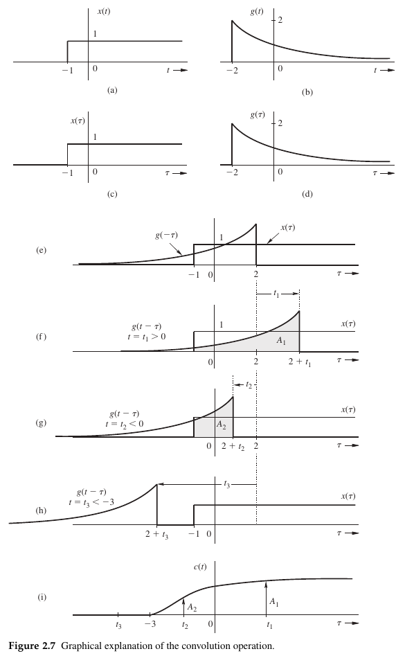
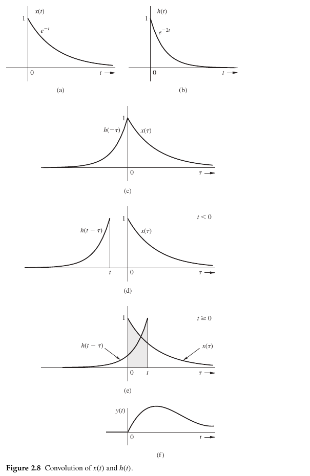
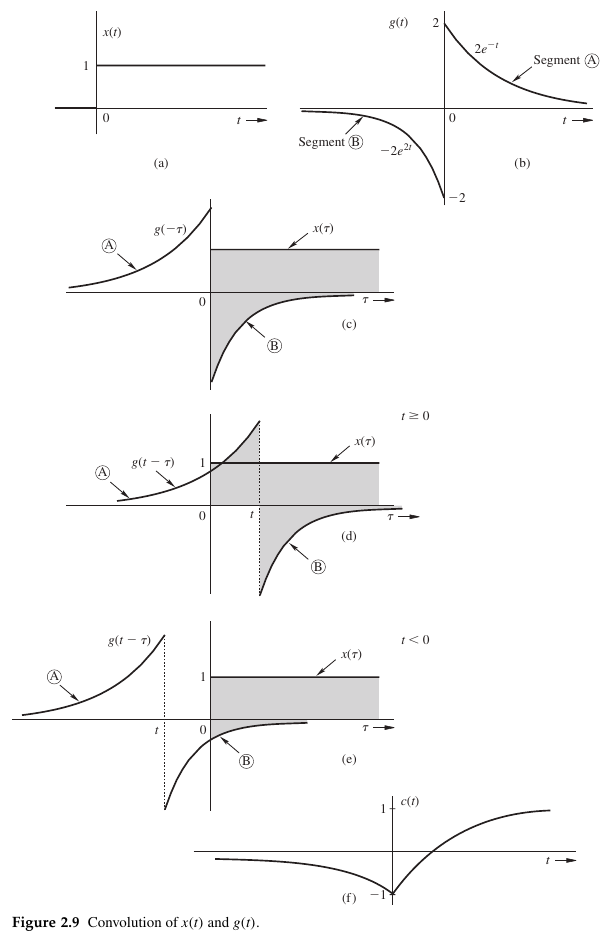
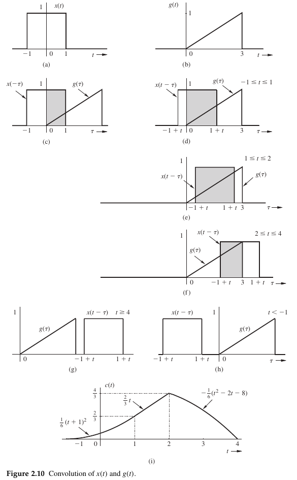

2.4-2 · Graphical Understanding of Convolution Operation
You already know the convolution integral. Here you will turn that integral into a picture you can move, inspect, and calculate from.
Your goal: choose a time, find the overlap, and calculate one output value. Repeat across the important time intervals to build the entire output.
Route: one worked visual process, three textbook examples, then a short transfer check. The upper plot always uses the integration variable \(\tau\); the lower plot uses output time \(t\).
1. Why draw a convolution?
- Handle complicated signals. A graph helps identify which pieces actually contribute to the integral.
- Predict the output shape. See where the result begins, grows, changes direction, and ends before doing all the algebra.
- Work from measured curves. When no exact formula is available, the graphical description still lets us estimate the product integral.
The important area is the signed area under the product, not the area between two curves. Below the horizontal axis, contributions count negatively.
Keep this: no overlap means zero product. Overlap does not always mean a nonzero result: positive and negative contributions can cancel.
2. Two time variables, two different jobs
- \(t\) chooses the output instant. Hold it fixed while evaluating one integral.
- \(\tau\) runs along the upper plot. It is the variable being integrated out.
- The answer is one number \(c(t)\), placed at time \(t\) in the lower plot.
At \(t=1\), the upper plot contains \(x(\tau)\) and \(g(1-\tau)\). At \(t=2\), it contains \(x(\tau)\) and \(g(2-\tau)\). Changing \(t\) moves the second curve; it does not rename the upper axis.
A useful analogy: freeze one video frame to measure its area. The slider selects the frame; the integral scans across that frame.
3. Four actions for one output point
- 1 · Read and fix. Draw both signals against \(\tau\), and choose which one stays fixed.
- 2 · Flip. Reflect the other signal about \(\tau=0\), giving \(g(-\tau)\).
- 3 · Shift. Move the flipped signal by \(t\): right for positive \(t\), left for negative \(t\).
- 4 · Multiply and integrate. Multiply the heights at each \(\tau\) and add their signed contributions over the overlap.
Why does a right shift produce \(g(t-\tau)\)? Write \(\phi(\tau)=g(-\tau)\) first. Then:
The textbook lists repetition as a fifth action. Here repetition is the Play action within step 4: each new \(t\) supplies another point on \(c(t)\).
Figure 2.7: the fixed step begins at \(\tau=-1\); the original decaying signal begins at \(-2\) with height 2. Its reflected edge is at \(+2\), and its shifted edge is at \(t+2\).
The original figure specifies the shape graphically, not its full analytic decay law. The demo uses \(g(s)=2e^{-(s+2)}u(s+2)\) as an explicitly labelled analytic realization of that shape. The edge locations and overlap cases come directly from the textbook; numerical areas in this demo use that realization.

Figure 2.7 · The graphical procedure
The overlap must satisfy \(\tau\ge-1\) and \(\tau\le t+2\). Therefore it starts only when \(t>-3\). For the stated demo realization:
Try: compare \(t=-4\), \(-2\), and \(1\). Negative output time does not automatically mean zero: these signals start before zero.
4. Example 2.10 · Two causal exponentials
Textbook signals
- \(x(t)=e^{-t}u(t)\).
- \(h(t)=e^{-2t}u(t)\).
Keep \(x(\tau)\) fixed. Flip \(h\) and then shift it. The fixed signal requires \(\tau\ge0\); the moving signal requires \(t-\tau\ge0\), or \(\tau\le t\).

Example 2.10 · Two causal exponentials
- For \(t<0\): the inequalities cannot both hold. No overlap, so \(y(t)=0\).
- For \(t\ge0\): the intersection is \(0\le\tau\le t\). These are the integration limits.
Check the shape: it starts at zero, rises, and decays back toward zero. The overlap interval grows, but its signal weights also change; overlap length alone is not the answer.
5. Example 2.11 · Positive and negative contributions
Textbook signals
- \(x(t)=u(t)\).
- \(g(t)=2e^{-t}\) for \(t\ge0\) (segment A).
- \(g(t)=-2e^{2t}\) for \(t<0\) (segment B).
The textbook deliberately flips the more complicated two-sided signal. Keep \(x(\tau)\) fixed: only \(\tau\ge0\) contributes. The moving signal changes formula at \(\tau=t\).

Example 2.11 · A two-sided signal
For \(t<0\), the positive branch ends to the left of the fixed step. Only the negative branch overlaps:
For \(t\ge0\), split the integral at the moving branch boundary \(\tau=t\):
Both pieces give \(c(0)=-1\). At \(t=\ln2\), the positive and negative areas cancel exactly, despite overlap. Infinite tails are evaluated analytically; the plotted window shows only a finite part of each tail.
6. Example 2.12 · Edges decide the cases
Textbook signals
- \(x(t)=1\) for \(-1\le t\le1\), and zero elsewhere.
- \(g(t)=t/3\) for \(0\le t\le3\), and zero elsewhere.
Use commutativity to flip the simpler rectangle: calculate \(g*x\). Keep the ramp \(g(\tau)\) fixed and move \(x(t-\tau)\).
The rectangle is symmetric, so flipping it leaves the outline unchanged. The endpoint markers exchange sides to show the reflection. After shifting, its edges are \(t-1\) and \(t+1\).

Example 2.12 · A rectangle and a ramp
Find the interval before integrating. The overlap is the intersection of \([0,3]\) with \([t-1,t+1]\):
If \(R\le L\), the area is zero. Otherwise the product equals \(\tau/3\) inside the overlap:
- Entering, \(-1\le t<1\): \(L=0\), \(R=t+1\), so \(c(t)=(t+1)^2/6\).
- Passing, \(1\le t<2\): \(L=t-1\), \(R=t+1\), so \(c(t)=2t/3\).
- Leaving, \(2\le t<4\): \(L=t-1\), \(R=3\), so \(c(t)=[9-(t-1)^2]/6\).
Verify the joins: \(c(-1)=c(4)=0\), \(c(1)=2/3\), and \(c(2)=4/3\). The support spans \([-1,4]\), of width \(5=2+3\).
Think of the rectangle as a window sliding across the ramp. During the middle case, the window width stays 2 but covers taller parts of the ramp. That is why the area keeps increasing.
7. Transfer the method
Use the same four actions without copying a worked solution. These short exercises follow the textbook's drills on p. 187-188:
- Drill 2.10: reverse the order in Example 2.11. Fix \(g(\tau)\) and integrate it up to \(\tau=t\); split at zero when \(t\ge0\).
- Figure 2.11: convolve \(e^{-t}u(t)\) with \(u(t)\). The overlap is \([0,t]\) for \(t\ge0\), giving \((1-e^{-t})u(t)\).
- Figure 2.12: convolve \(e^{-t}u(t)\) with \(u(-t)\). The lower limit is \(\max(0,t)\); the result is 1 for \(t<0\) and \(e^{-t}\) for \(t\ge0\).
- Figure 2.13: convolve \(u(t-T)\) with \(u(t+T)\). The opposite shifts cancel and the result is \(tu(t)\).
The last pages of this section also explain why the reversal makes physical sense (Figure 2.14, p. 190): \(h(t-\tau)\) weights an input according to its age at observation time \(t\). For a response that fades to zero after one second, inputs older than \(t-1\) no longer contribute.
Before moving on, you should be able to:
- State which signal is fixed and which is reflected.
- Derive the overlap inequalities and identify every case boundary.
- Integrate the signed product and test the joins of the output pieces.
In Section 2.4-3 you will use convolution to combine interconnected systems. This section supplies the graphical method; the next section uses it to connect systems together.